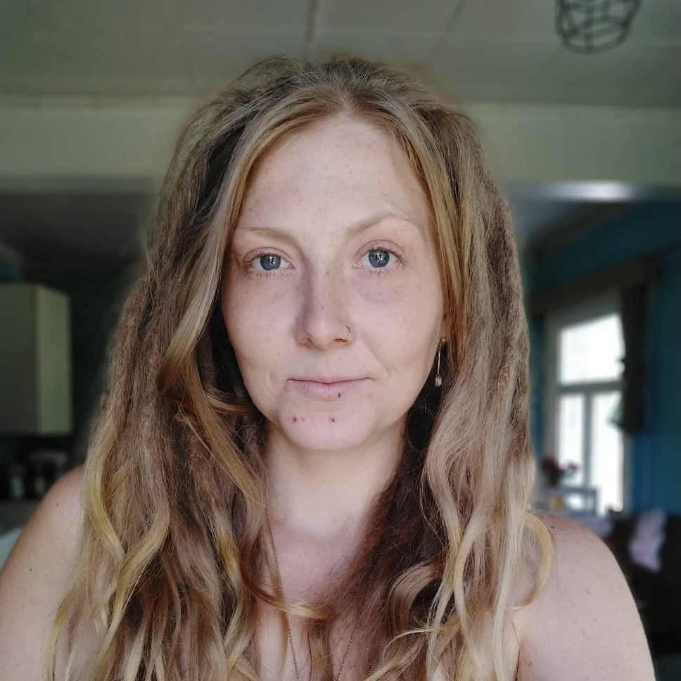

About Me

Hi my name is Sanelma and I currently live in my van with my Croatian resque dog named Bo. Together we travel and visit new places and
learn new faces, while getting to know different cultures and new exploration spaces. My lifestyle is not as luxuriious
as some influencers have painted it to be, it's a humble and down to earth kind of living and I wouldn't change it for a thing.
There's something about the water that draws me to it, I often seek spaces near water; waterfalls, lakes, oceans, springs or streams.
And once I find a good spot to park the van, I often like to spend more than a week in the same spot, gettting to know the area and people around it.
I'm completely in love with our home our guardian and our greatest supporter mama earth.
She has shown me my most precious moments and has always been there to help keep me on my feet,
though sometimes her tests can be rough but at the end of it all I have definitely learned the lessons she has thrown my way.
I've dealt with mentalilness and struggled with eating disorders through out my life.
And what I truly wanted from life was to be able to somehow help those that are in pain or in need of support.
I haven't seen the value I could bring to the world by just doing exactly what I love;
Making art and through my art trying my best to motivate and inspire others to
reach for the stars and do exactly what their hearts and souls so strongly desire.
Most of what I make is inspired by nature and our natural curves and shapes that we see in our everyday lives.
One of my passions is promoting feminine sexuality and talking openly about how we as women are also allowed to express our selves as sexual beings.
I absolutely think sex and everything around it has been made way too tabu,
and by talking about it openly I'm hoping to help decrease some of the social stigma
that is often connected to openly talking about sex or sexuality.
So I create art inspired by mentalilness, bodypositivity, nature and
the energies we are constantly surrounded by and my goal is to inspire others and
hopefully send positive riples into the universe.
I paint using mostly oil paints but I sometimes use acrylic or spray paints and often try to experiment
with different materials and layers to create more texture and depth.
Most of my canvases so far are store bought but
I'm hoping to get a few of my own canvases streched out soon and experimenting with using different fabrics as well.
My Macrame is currently made from waxed polyester chord, but I'm looking into different options made out of natural materials.
The beads I use in my jewelry varies a lot but smaller beads are mostly just glass or wood beads.
I sometimes use special stones or hand carved beads and such.
If I use special stones you can find the information in the description box of each item.
My postcards are handpainted with either acrylic paint or oil and in some special cases
I've used plants and materials from the nature instead of traditional painting techniques.
I love experimenting with new mediums and playing around with mixed media while using things I find in the nature as well as
new techniques passed form others, or then just trying new things out together myself to check the durability and strength of
each bond between different mediums.